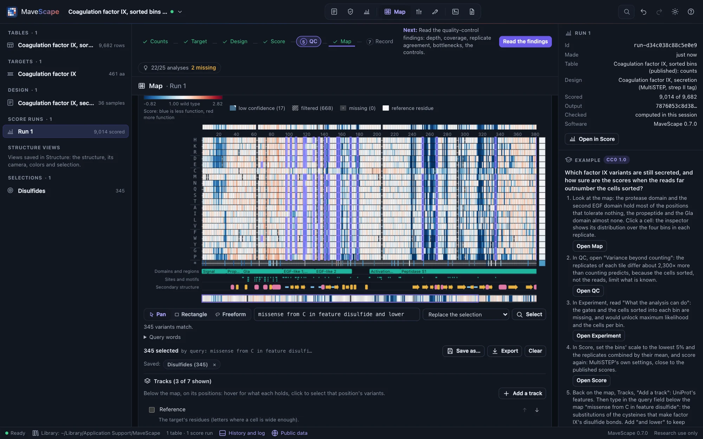
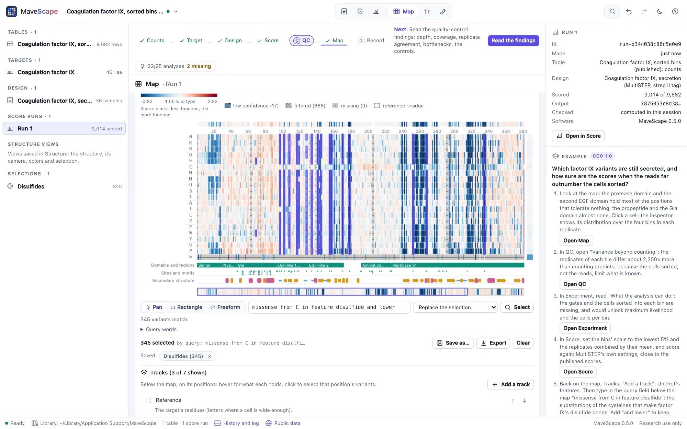

Selections
A selection is a set of variants on a run's map, made by hand or said in words. Saved by name, it is combined with others, used in other runs of the same protein and in the other views, and written out with the query that made it.
Selecting variants


On the map (The map and the inspector):
- Click a cell to select it and see it in the inspector; ⌘- or Ctrl-click adds it or takes it away.
- A rectangle: ⇧-drag over the cells.
- A freeform shape: ⌥- or Alt-drag around them; the cells whose centers fall inside are selected. With ⌘, Ctrl or ⇧ held, a shape or a rectangle adds to the selection.
- Pan, Rectangle, Freeform, beside the query field, set what a plain drag does (for a touch screen, or a trackpad without the keys).
- A track: click a position on a track below the map to select its variants (a domain's: every position it covers).
- The keyboard: with the map focused, the arrows move between cells and Enter selects.
- A query, typed in the field below the map, and Enter or Select.
The selection is the window's: the inspector shows its first variant, and the other views read it (below). Clear ends it.
The query language
A query says which variants in words. Terms side by side are joined by and, as are with, whose and that, so the roadmap's phrases are queries as written: missense at 40-80 with se < 0.2; variants whose class depends on the pseudocount. or, not and parentheses work as usual. The words (also under Query words, below the field, each with an example to try):
| Words | What they select | Example |
|---|---|---|
missense, nonsense, synonymous, start-lost | The variant's class | nonsense or synonymous |
scored, low, confident, filtered, missing, unscored | Its state: scored (with low confidence or without), scored with low confidence, scored without it, filtered, not measured, either of the last two | missense and low |
at, pos, refpos | Positions on the target, a range or a list (refpos: on the reference's numbering, the target's offset added); or compared, pos > 100 | at 40-80,95 |
from, to | The wild-type residue and the substituted one: one letter, three (Cys, Ter), or the map's groups: positive, negative, polar, aliphatic, aromatic, special, stop | from C to aromatic |
score, se, q, replicates, input | Compared with a number (<, <=, >, >=, =, !=): the score (on a contrast's map, the difference), its SE, the q of its class, the replicates behind it, its mean input count. A variant without a score never passes | se < 0.2 |
lower, higher, neutral | Its class against the wild type, beyond its uncertainty (q < 0.05 by Benjamini and Hochberg; on a contrast's map, the difference's own q), as Robustness classes it | lower and at 1-30 |
robust, fragile, uncertain, borderline, size-dependent, sometimes-scored | Its robustness verdict, once the run is checked | lower and not robust |
depends on, class depends on, size depends on | A verdict that a choice alone accounts for: pseudocount, normalization, model, regression, combination, filters or leave-out | class depends on the pseudocount |
feature | Positions under a feature beside the map, by its name or type, in part (* and ? as wildcards): UniProt's domains, sites and secondary structure, or a GFF3 file's | in feature "disulfide bond" |
in, selected, all | A saved selection, by its name; the selection now; every designed cell | in Core and not in Surface |
What a query does to the selection is chosen beside it: replace it, add to it, keep only the matches in it, or remove the matches from it. A query that names something the run does not have says so and offers it: the verdicts need the run's robustness checked (Check robustness, then select checks it, then selects); a feature needs features beside the map (Add UniProt's features, then select, for a target with its accession). A word MaveScape does not know is named, and the query's text from it is selected in the field. The variants selected are listed along the target, then by amino acid, whatever the map's row order.
Depending on a choice means depending on it alone. A variant at the threshold that only several choices changed together does not depend on any one of them; its verdict says so (borderline, its choices listed together in Robustness). On GRB2's Run 1, variants whose class depends on the pseudocount selects 4 variants; in the simulated experiments with a planted dependence on the pseudocount, size depends on the pseudocount selects exactly the planted ones, and their class depends on it in none. A protein variant of a nucleotide run (its map's cells merge several) passes a verdict when one of its nucleotide variants does.
Saved selections and set operations
Save as… keeps the selection by name in the workspace, with its query when one made it; saved selections are listed in the dataset tree and under the map. Click one under the map for what to do with it: select its variants; add them to the selection, keep only the selected that are in it, or remove them from it (union, intersection and difference); run its query on the map shown; delete it. A query names saved selections too, so any combination can be said at once: in Core or in Rim, in Core and not in Surface, (lower and in Core) or fragile.
A selection made by a query and changed by another keeps both: missense at 10-30 with se < 0.2, then low removed, is saved as (missense at 10-30 with se < 0.2) and not (low), which can be run again on another run. A selection changed by hand has no query. A saved selection is a list of variant names, so it applies to every run of the same protein: it is listed under each run's map, and selects there the variants that run has. Selected in the dataset tree, the inspector shows a saved selection's variants by class, its query, the runs it applies to, and exports it.
Across the views
- Score: the variants table lists the run's variants selected on the map (Selected on the map), a nucleotide run's by the protein variants they make. Any list it shows (low confidence, filtered, a search) goes to the map with Select on the map.
- Robustness: each verdict's variants go to the map with Select on the map, selected by the verdict's word (
fragile); a difference's, on that contrast's map. - Compare: the maps outline the selection on the side of its run; the variants that differ beyond their uncertainty go to the map with Select them on the map.
- Structure: the selection's positions are drawn on their residues, on every chain that holds the target. A residue clicked there selects its position's variants here (
at 25), and residues selected in words there select theirs (Scores on the structure). - The inspector shows the selection's first variant, and a saved selection when it is selected in the dataset tree; a residue clicked on the structure, its position.
The files and scripts
Export beside the selection writes its variants with their scores, SEs and states (CSV), or the selection itself (JSON: its name, run, condition, query and variant names; FORMATS.md). The archive keeps saved selections with their queries.
Remote control's select_variants takes a query, variants or positions, an operation (replace, add, intersect or subtract) on the selection there is, a contrast to select on its differential map, and save_as; a query that needs the run's robustness checks it first. export with what: "selection" writes the selection, or a saved one by name (Remote control).
How it was validated
The validation suite selections checks fourteen queries on GRB2's Run 1 (positions, residues, states, scores, SEs, replicates, input counts, classes) against an independent account of each of its map's 1,176 cells, read from the run's own arrays: the same variants in the same order. Union, intersection and difference by query equal the sets' own; De Morgan's laws and double negation hold; a saved selection on a second run of GRB2 holds the same variants. Each robustness verdict selects exactly the variants the check gives it, and in three simulated experiments with planted fragile results, fragile and size depends on the pseudocount select exactly the planted ones. feature disulfide on factor IX selects the 22 cysteines of UniProt P00740's disulfide bonds. A rectangle drawn as a freeform shape selects what the rectangle does, and a circle the cells whose centers it holds. The selection's files and the archive keep its query. Remote control's selections equal Node's on the run recomputed from the archive.